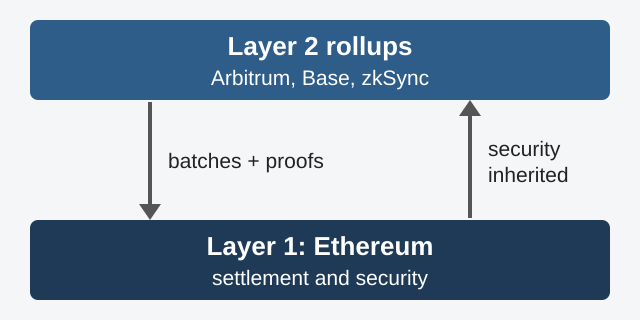

Smart Contracts, Layer 1 and Layer 2: How Blockchains Run Programs and Scale
Abstract
Smart contracts are programs stored on a blockchain that run exactly as written, with no middleman. Base blockchains (Layer 1) such as Ethereum execute these contracts and keep them secure, but they can only process so many transactions. Layer 2 networks, mostly rollups, move most of the work off the main chain while still relying on it for security. Ethereum’s roadmap leans on this split, and it brings new risks to understand. This site explains what smart contracts are, how Layer 1 and Layer 2 differ, and why the split matters for cost, speed, and trust. A short quiz at the end lets you check what you learned.
Key Terms
Smart contract Layer 1 Layer 2 Rollup Gas fee Consensus Scalability Decentralization

Key Findings
- Smart contracts remove the middleman, but bugs in them can be very costly.
- Layer 1 chains trade off security, decentralization, and speed.
- Rollups cut fees by batching transactions and posting the data to Layer 1.
- Ethereum’s upgrades (Dencun, Pectra, Fusaka) have made Layer 2 data cheaper.
- Bridges and rollup admin keys are the main extra risks of using Layer 2.
Table of Contents
- Smart Contracts: what they are and how they work
- Layer 1 Blockchains: Ethereum, Solana, and the scaling tradeoff
- Layer 2 Solutions: rollups, optimistic vs. zero-knowledge
- Roadmap: Ethereum’s upgrades and plans for scaling
- Security and Risks: hacks, bridges, and how to stay safe
- Key Concepts: twelve ideas to know
- Quiz: a 10-question self-assessment with a 10-minute timer
- References and Resources: sources and where to keep learning
- About: the author and this project